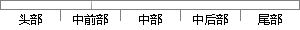

在线调查答卷在几分钟之内就可以回收，几天内就能完成调查。
片段位置图

相似结果|
相似片段 1：调查问卷 答卷回收速度是非常快的。取决于被访问的人群、问卷调查的目 、和问卷发放方法，有 答 几分钟之内就可以回收，几天内就能完成 。相反 纸张调查 是需要几周或几个月 时间来进行发送和回收的。线上调查
相似片段 2：线上调查问卷的答卷回收速度是非常快的。取决于被访问的人群、问卷调查的目的、和问卷发放方法，调查答卷在几分钟之内就可以回收，几天内就能完成调查。相反，纸张调查问卷是需要几周或几个月的时间来进行发送和
相似片段 3：线上调查问卷的答卷回收速度是非常快的。取决于被访问的人群、问卷调查的目的、和问卷发放方法，调查答卷在几分钟之内就可以回收，几天内就能完成调查。2)案例研究法：案例研究法是结合市场实际，以典型案例为
相似片段 4： child&teenager health websites天下妈（3）在线调查法网站在线调查法现在也比较流行，它有以下好处。（1）线上调查问卷的答卷回收速度非常快，一般问卷内容都比较少，基本几分钟之内就可以
|
※ 片段修改建议 ※
近似词参考：- 调查：查询拜访 观察
- 之内：以内
- 就可以：就能够 就能
- 回收：收受接管 接纳
- 就能：就可以
- 调查：查询拜访 观察
系统自动生成语句：在线查询拜访答卷在几分钟以内就可以够收受接管，几天内就可以完成查询拜访。
注：本片段修改建议为系统自动生成，仅供参考。